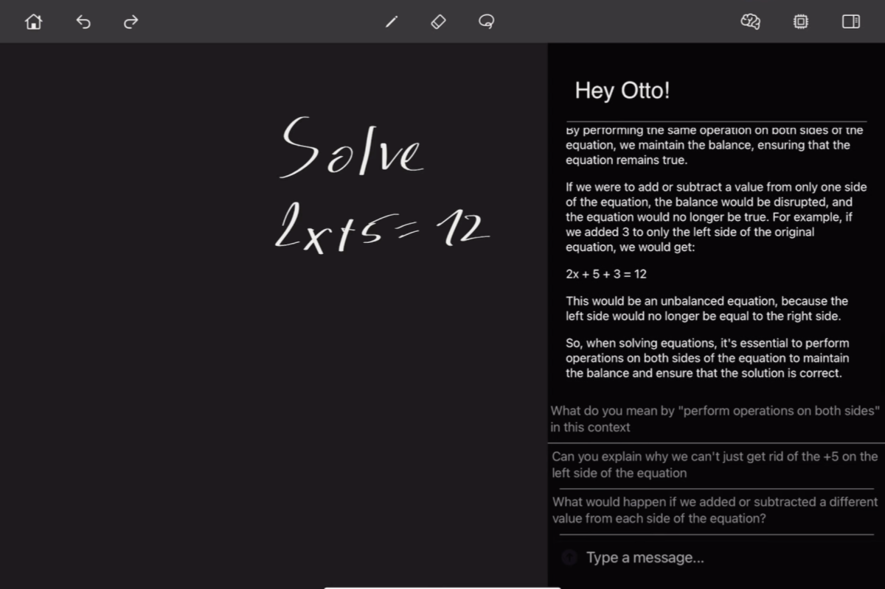
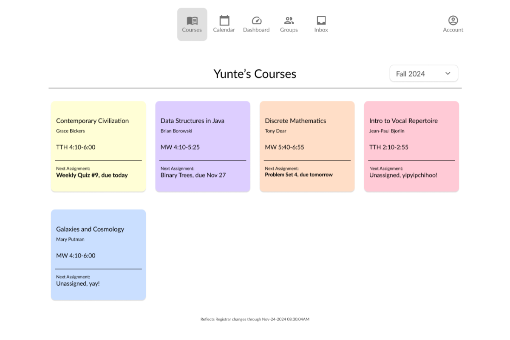
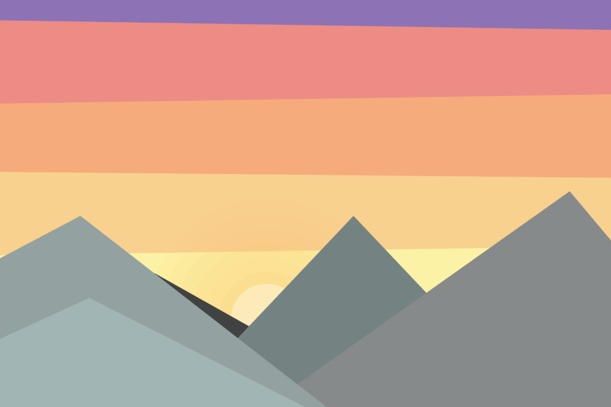

Hey, I’m Yunte (pronounced yoon-té)! I study CS and music at Columbia.
I aim to design intuitive products that can improve people’s day-to-days.
Currently: Marketing Intern at Munice
Previously: Summer Analyst at Botticelli Capital and Intern at KOICA
Projects

Quillin'

Canvas Redesign

Visual Mixer
Contacts
jyl2199@columbia.edu | linkedin.com/in/jyl2199